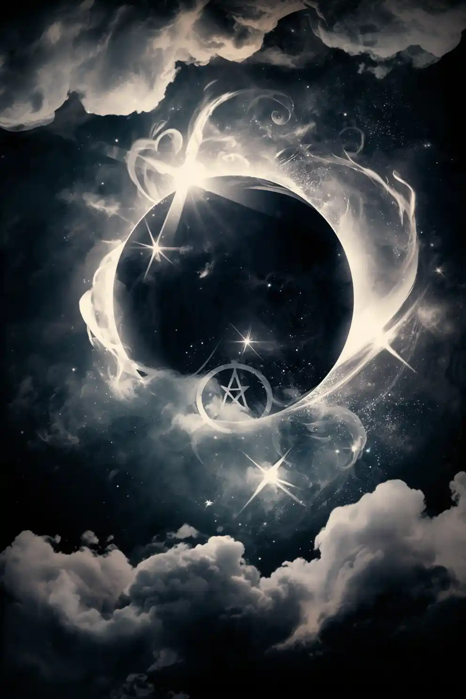

The Living Archive
Lore & Chronicles
Blog posts, worldbuilding articles, maps, magic systems, provinces, deleted scenes, behind-the-scenes author notes, reader announcements, and upcoming releases from Annuscha Botes' dark fantasy universe.
World Lore
Character Secrets
Magic Systems
Deleted Scenes
Writing Updates
Behind the Book
Cover Art & AI Art Process
Reader Announcements
Upcoming Releases
Latest / Magic Systems Top 7 Most Dangerous Echo Powers Threat levels, side effects, and Company classifications. Open Record

Forbidden Records Forbidden Record 07: The Empty Coffin Restricted psychological fragments from Company archives. Open Record
World Lore The Shadow War: How Elysium Lost Its Balance The Circle of Twilight, the Ebonlight, and the birth of the Golden Order. Open Record
Worlds System
Maps, magic, provinces, and lands
Geography
Maps of the Realms
Travel routes, territories, city records, and creature zones.
Magical Systems
Laws of Magic
Echo awakenings, dangerous powers, and the price of magic.
Provinces / Lands
Lands & Bloodlines
Exile records, and bloodline histories.
Past Records
Older-post archive
Character Secrets The Night Cain Became a Monster
Deleted Scenes First Lines of Shadows of Elysium
From the Author's Desk What Inspired Planet of Xyphara
Behind the Book The Worlds of Annuscha Botes
Worldbuilding Building Xyphara From Scratch
Cover Art & AI Art Process How I Designed Elysia Nightshade